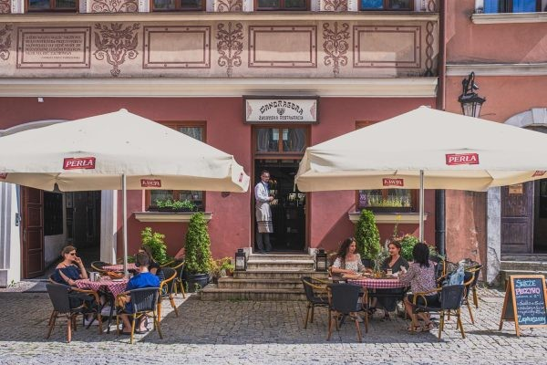

Plan podróży – 23.05.2025
| Godzina | Etap podróży | Transport | Szczegóły | Odjazd za | |
|---|---|---|---|---|---|
| 04:14 | Grudziądz → Jabłonowo | AR 50900 | Arriva RP | Pobierz | |
| Przesiadka: 5 min | |||||
| 04:57 | Jabłonowo → Warszawa | IC 5130 "Brda" | Wagon 4, msc. 51–58 | - | |
| Przesiadka: 26 min | |||||
| 07:49 | Warszawa → Lublin | IC 5224 "Kochanowski" | Wagon 4, msc. 51–58 | - | |
Plan powrotu – 26.05.2025
| Godzina | Etap podróży | Transport | Szczegóły | Odjazd za | |
|---|---|---|---|---|---|
| 12:34 | Lublin → Toruń Główny | IC 38102 "Zamoyski" | Wagon 14, msc. 11–16 | Pobierz | |
| Przesiadka: 29 min | |||||
| 17:08 | Toruń Główny → Grudziądz | AR 50817 | Arriva RP | Pobierz | |
Nawigacja – kliknij, aby uruchomić trasę z aktualnej lokalizacji
Nawiguj do: Restauracja Mandragora
Nawigacja – z restauracji do busa (Dworzec PKS)
Pokaż trasę pieszo z restauracji Mandragora do Dworca PKSWyjazd busem – 23.05, godzina 16:05
Godzina odjazdu: 16:05
Miejsce: Dworzec PKS Lublin, Al. Tysiąclecia 6, stanowisko 10
Przewoźnik: Przewóz Osób Leszek Smyk
Zobacz rozkład jazdy na FacebookuPo dotarciu na miejsce – spacer do Ośrodka Leśna Ryba, Stara Jedlanka 23
Bus odjedzie za:
Dzień 1 – 23 maja (piątek)
- 17:00 – Przyjazd i zakwaterowanie w Ośrodku Leśna Ryba
- 19:00 – Powitanie, kolacja, ognisko i biesiadowanie
Dzień 2 – 24 maja (sobota)
- 08:00 – Śniadanie
- 09:00 – Wyjazd do Lublina
- 09:50 – Spotkanie z przewodnikiem
- 10:00 – Zwiedzanie Kaplicy Trójcy Świętej, Wieża Donżon, Brama Grodzka
- 12:30 – Plac Litewski, fontanna multimedialna, pomnik Unii Lubelskiej
- 14:00 – Obiad w Rozmarynie
- 15:45 – Zwiedzanie Browaru Perła + degustacja
- 19:30 – Uroczysta kolacja w Leśnej Rybie
Dzień 3 – 25 maja (niedziela)
- 08:00 – Śniadanie
- 09:30 – Wyjazd do Kozłówki – zwiedzanie muzeum
- 14:00 – Obiad
- 15:00 – Wędrówki po Poleskim Parku Narodowym z przewodnikiem
- 19:30 – Biesiada grillowa
Dzień 4 – 26 maja (poniedziałek)
- 08:00 – Śniadanie
- Po śniadaniu – zakończenie rajdu i wyjazd uczestników
Restauracja Mandragora
Adres: Rynek 9, 20-112 Lublin
Telefon: 81 532 00 50
Strona: www.mandragora.lublin.pl
